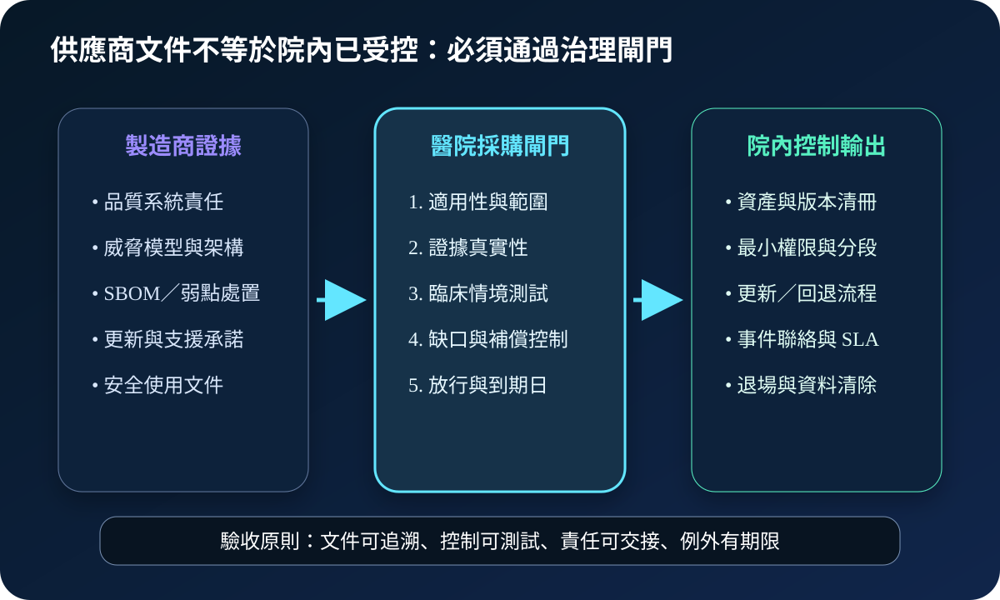
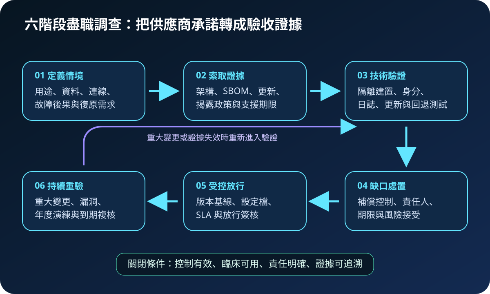
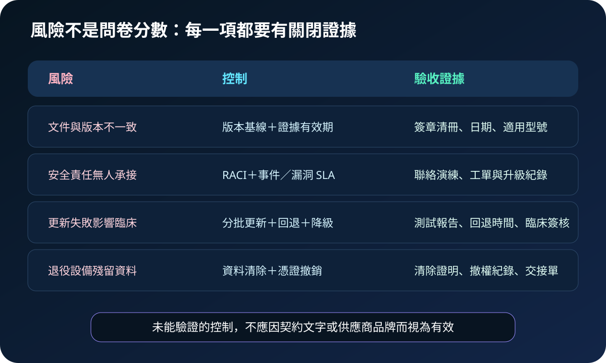

醫療資安國際觀察 · 2026-10-12
醫療設備採購如何驗證供應商安全證據：從 QMSR 到盡職調查
作者：Dr. William｜醫療資訊與資安治理實務工作者
醫療設備具備製造商文件，不代表院內風險已受控；採購驗收必須確認證據適用於實際型號、版本、連線、資料流與臨床情境。
名詞解釋：QMSR 與供應鏈盡職調查
QMSR 是美國 FDA 的品質管理系統規則，2026 年 2 月 2 日生效，將 ISO 13485:2016 納入美國醫療器材品質制度並保留特定 FDA 要求。供應鏈盡職調查則是在採購前後蒐集、驗證與持續更新供應商風險證據，不只看問卷分數，也檢查控制是否可測試、責任是否可交接。
國際現況與適用邊界
FDA 於 2026 年 2 月發布醫療器材資安最終指引，涵蓋安全產品開發框架、威脅模型、資安架構、測試、SBOM、標示及上市後弱點管理。QMSR 同月生效，品質系統責任主要落在進入美國市場的器材製造商。NIST 於 2026 年 7 月發布 SP 1326，提供 ICT 供應商盡職調查評估框架，並明確允許依組織規模、風險與資源調整。
台灣適用原則：FDA 與 NIST 文件不是台灣醫院的直接法定義務。醫療機構可將其作為採購證據與風險分級參考，但產品法規、個資處理、契約責任及臨床放行仍須依台灣法令、主管機關要求與院內程序辦理。
規劃：先把臨床用途轉成證據需求
範圍應包含設備型號與軟體版本、處理資料、網路依賴、遠端維護、更新方式、故障後果、支援期限及退場處理。角色至少涵蓋臨床、醫工、資訊、資安、採購、法務與供應商。驗收指標可採證據有效率、高風險缺口關閉率、更新回退成功率、事件聯絡演練時間及退場清除完成率。
實作：六階段閉環
- 定義情境：記錄用途、資料流、連線與可接受降級方式。
- 索取證據：取得架構、SBOM、測試摘要、更新政策、揭露窗口與支援期限。
- 技術驗證：在隔離環境測試身分、權限、日誌、更新、回退與網路限制。
- 缺口處置：設定補償控制、責任人、期限及風險接受層級。
- 受控放行：保存版本基線、設定、SLA 與臨床簽核。
- 持續重驗：重大變更、漏洞、續約及年度演練時重新確認。

風險：證據可能過期、失配或無法交接
常見失敗包括文件對不到實際版本、遠端維護責任模糊、更新失敗卻沒有回退、供應商停止支援仍持續連網，以及設備退役後資料與憑證未清除。控制要以版本基線、有效期、責任矩陣、更新演練、替代流程及退場證明關閉，不能只依契約文字判定有效。

可執行清單
- 供應商證據是否對應實際型號、版本與部署架構？
- SBOM、測試摘要、更新與漏洞揭露政策是否有日期與適用範圍？
- 遠端維護是否採限時授權、強驗證與完整會話紀錄？
- 更新失敗時是否有回退、臨床降級與復原時間目標？
- 供應商停止支援前是否有替換、隔離或風險接受計畫？
- 退役時是否完成資料清除、憑證撤銷與資產除帳？
來源
- FDA｜Cybersecurity in Medical Devices: Quality System Considerations and Content of Premarket Submissions（發布：2026-02；查閱：2026-10-12）
- FDA｜Quality Management System Regulation（生效：2026-02-02；查閱：2026-10-12）
- NIST｜SP 1326: Cybersecurity Supply Chain Risk Management Due Diligence Assessment Quick-Start Guide（發布：2026-07-08；查閱：2026-10-12）
內容說明
本文依健康台灣深耕計畫相關治理內容整理，並參考 FDA 與 NIST 公開資料，提出醫療設備供應商證據與採購驗收框架；不把外國規則視為台灣法定義務，也不取代主管機關公告、產品審查、臨床判斷、契約或法律意見。